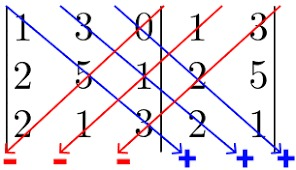
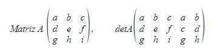
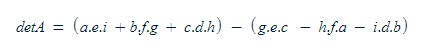

Determinante de Matrizes
O determinante é um valor escalar associado a uma matriz quadrada. Ele é calculado com base nos elementos da matriz e é usado para determinar várias propriedades e características da matriz, incluindo sua invertibilidade e independência das colunas ou linhas, etc.
O determinante é geralmente denotado por "det(A)" ou, às vezes, "|A|". Para calcular o determinante de uma matriz, existem diferentes métodos, como o método de Sarrus (aplicável apenas a matrizes 3x3), expansão por cofatores e a regra de Laplace (também conhecida como expansão de cofatores), e decomposição LU, entre outros, para matrizes de tamanhos maiores.
Para uma matriz A, o determinante é calculado da seguinte forma:
Abaixo está um exemplo de como essa fórmula funciona na prática:
 O Determinante tem várias propriedades úteis:
- invertibilidade: Se o determinante de uma matriz for diferente de zero, então a matriz é invertível, ou seja, tem uma matriz inversa.
- Linearmente Independente: As colunas (ou linhas) de uma matriz são linearmente independentes se e somente se o determinante é diferente de zero.
- Sistemas de Equações Lineares: O determinante pode ser usado para determinar se um sistema de equações lineares.
- Propriedade de Matrizes Multiplicadas: O determinante do produto de duas matrizes é o produto dos determinantes individuais, ou seja, det(AB) = det(A) * det(B).